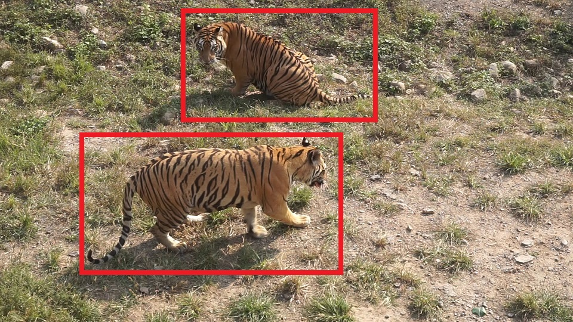
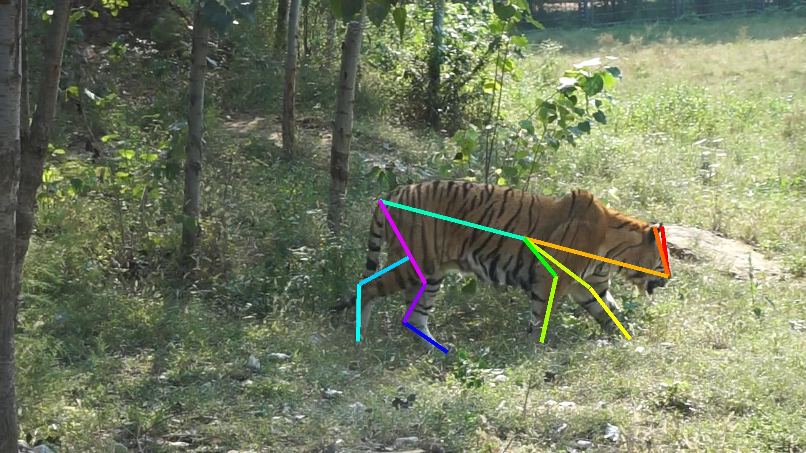

ICCV 2019 Workshop & Challenge on
Computer Vision for Wildlife Conservation (CVWC)
Oct-27, 2019 @ Room-E3, COEX Convention Center, Seoul, Korea| |
 |
简介
保护野生动物对于维持健康和平衡的生态系统以及确保我们世界的持续生物多样性非常重要。 特别地，濒危物种是生物多样性和环境健康的重要指标。 世界各国政府以及WWF（世界自然基金会）等环保组织都投入了大量资源和项目来保护濒危物种。
幸运的是，计算机视觉技术已经显示出其潜力，因为我们现在能够从监控相机甚至无人机收集大量图像数据，并使用这些图像构建用于野生动物保护的边缘到云系统。从边缘部署的角度来看，CV技术可以应用于智能成像传感器，以捕获野生动物相关的图像/视频并监控野生动物。由于云系统可以访问更多的计算，我们可以应用更复杂的任务，例如从分布式摄像机的大量照片中重新识别某些野生动物个体，跟踪移动模式，以及跨多个传感器聚合信息。
本次研讨会旨在加强CV社区的社会责任，并汇集社区研究人员，从3个方面使用CV技术推进野生动物保护：
- 欢迎提交在CV领域中有关野生动物保护的论文。
- 基于我们为东北虎保护收集的数据集，组织一次challenge，包含虎类检测，姿势估计和重识别等任务。
- 通过CV社区和传统野生动物保护社区的邀请讲座和小组讨论，培养关于“利用CV技术保护野生动物”的新想法和方向。
征集论文
研讨会的话题包括但并不限于：
- Fine-grained wildlife recognition
- Wildlife re-identification
- Wildlife tracking
- Smart trap sensor design
- Drone based monitoring/tracking
- Simulation and visualization
- Full conservation system
- Dataset related to wildlife conservation
- Challenge solutions
- 贡献论文
- 挑战的解决方案
- 有特色的现有工作
Challenges
基于Amur Tiger Re-identification in Wild (ATRW)数据集，我们举办了包含以下四个track的challenge：
- 虎类目标检测
- 虎类关键点检测
- 虎类身份重识别
- 野生环境下的虎类重识别


| Datasets | ATRW | [1,2] | C-Zoo[3] | C-Tai[3] | TELP[4] | α-whale[5] |
|---|---|---|---|---|---|---|
| Target | 老虎 | 老虎 | 黑猩猩 | 黑猩猩 | 大象 | 鲸鱼 |
| Wild | √ | √ | × | × | × | √ |
| Pose | √ | × | × | × | × | × |
| #BBoxes | 9,496 | 278 | 2,109 | 5,078 | 2,078 | 924 |
| #BBoxes with ID | 3,649 | 278 | 2,109 | 5,078 | 2,078 | 924 |
| #ID | 92 | 278 | 24 | 78 | 276 | 38 |
| #BBx/ID | 39.7 | 1 | 19.9 | 9.7 | 20.5 | 24.3 |
组织者
Jianguo Li
Intel Labs
Weiyao Lin
Shanghai JiaoTong University
Hanlin Tang
Intel AI Lab
Greg Mori
Simon Fraser University
Joachim Denzler
Friedrich Schiller University Jena
特邀演讲嘉宾
Pietro Perona
Caltech
Jingdong Wang
Microsoft Research Asia
Director (TBD)